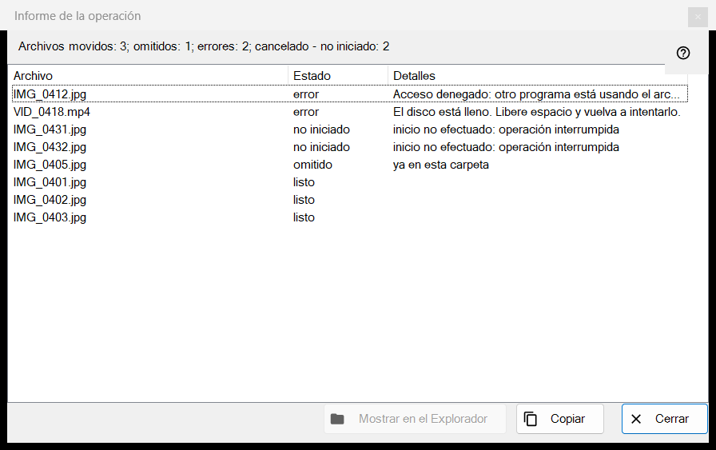
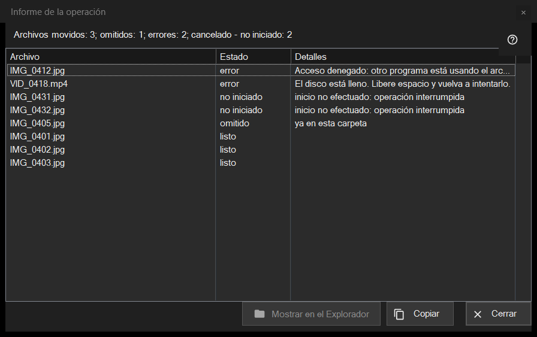

Informe de la operación
Para qué sirve
Enumera lo que ocurrió con cada archivo de la última operación por lotes (mover, copiar, eliminar o deshacer) y por qué algo se omitió o falló. Nunca se abre solo: haga clic en la línea del informe al pie del panel de miniaturas (F3) después de una ejecución. Si la ejecución no fue limpia, la línea termina con «haga clic para ver los detalles».


En este orden
- Ejecute una operación sobre varios archivos en el panel de miniaturas.
- Lea la línea de resumen al pie del panel.
- Haga clic en la línea para abrir esta ventana.
- Mire la parte superior de la lista: los fallos van primero.
- Seleccione filas y use «Copiar» para tomar sus rutas o «Mostrar en el Explorador de archivos» para encontrar un archivo.
Los elementos
La línea de resumen
La línea empieza con el resultado: «Archivos movidos: 5», «Archivos copiados: 5», «Archivos eliminados: 5», «Archivos restaurados: 5» u «Operaciones completadas: 5». Otras partes, cada una con su número, aparecen solo cuando el número no es cero: «omitidos», «errores», «operaciones sin deshacer», «eliminados permanentemente, no se pueden restaurar» y, cuando la ejecución se detiene antes de tiempo, «interrumpido, sin conexión con la carpeta - no iniciado» (tres conexiones fallidas seguidas la detienen) o «cancelado - no iniciado».
La lista
Columnas: Archivo, Estado y Detalles. Las filas peores van primero: fallidas, después no iniciadas, después omitidas y por último hechas; dentro de un grupo los archivos conservan el orden de la ejecución. La información en pantalla de una fila muestra la ruta completa. Los detalles dan un motivo claro para un fallo, la carpeta de destino para un archivo terminado, «guardado como» y el nombre nuevo cuando el antiguo estaba ocupado, y «Eliminado permanentemente - no se puede deshacer» para una eliminación que se saltó la Papelera.
Estados y motivos de omisión
Estados: «listo», «Error», «omitido», «no iniciado». Un archivo omitido dice por qué: «ya en esta carpeta», «el archivo ya no está en el disco», «los archivos dentro del archivo no se modifican», «el mismo nombre ya existe entre los archivos seleccionados», «el recurso es de solo lectura», «este es el mismo archivo» o «nombre ya ocupado en la carpeta de destino». Un archivo no iniciado dice «inicio no efectuado: operación interrumpida».
Mostrar en el Explorador de archivos, Copiar, Cerrar
«Mostrar en el Explorador de archivos» está activo cuando hay una fila seleccionada; abre una ventana de carpeta con el primer archivo seleccionado resaltado, o la carpeta si el archivo se ha movido. «Copiar» (también Ctrl+C) pone en el portapapeles las rutas completas de las filas seleccionadas, una por línea, o de todas las filas si no hay ninguna seleccionada: una forma rápida de pasar la lista de archivos con problemas. «Cerrar» termina el informe.